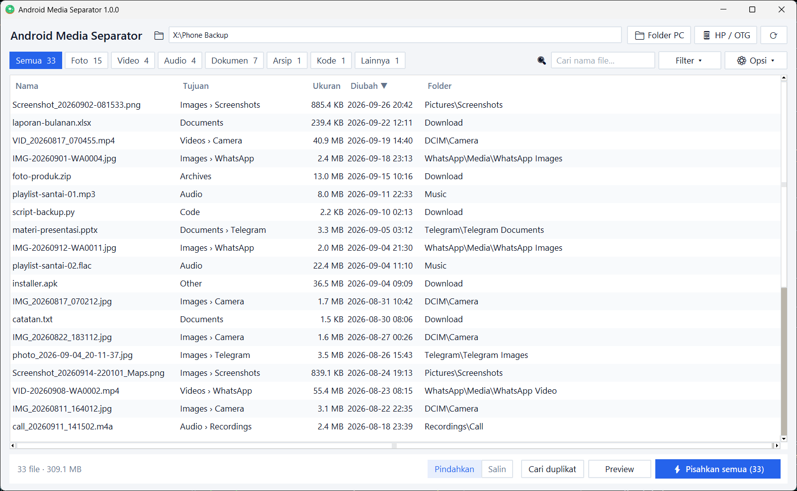
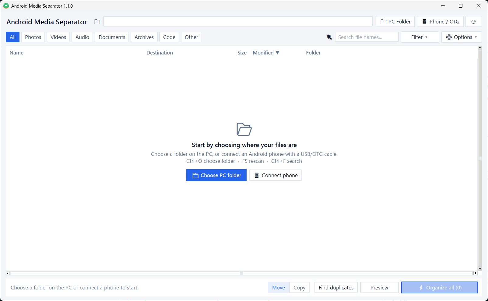
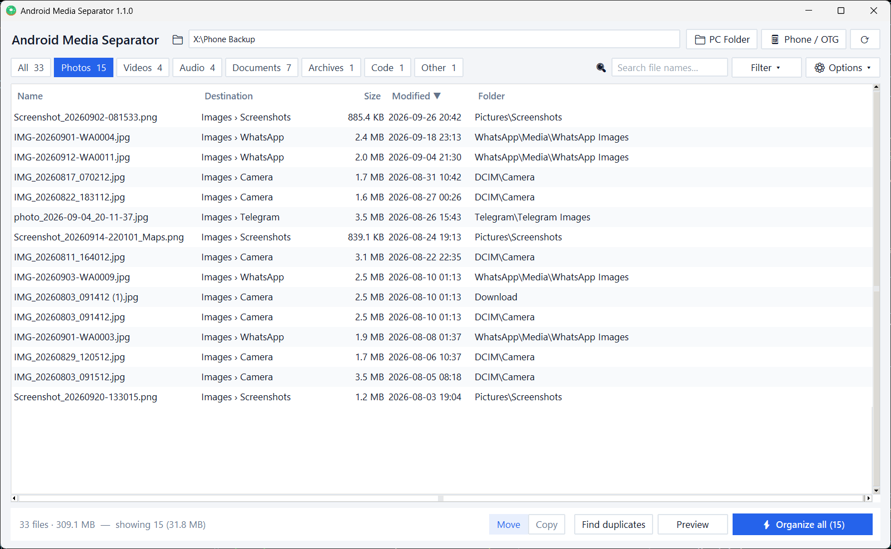
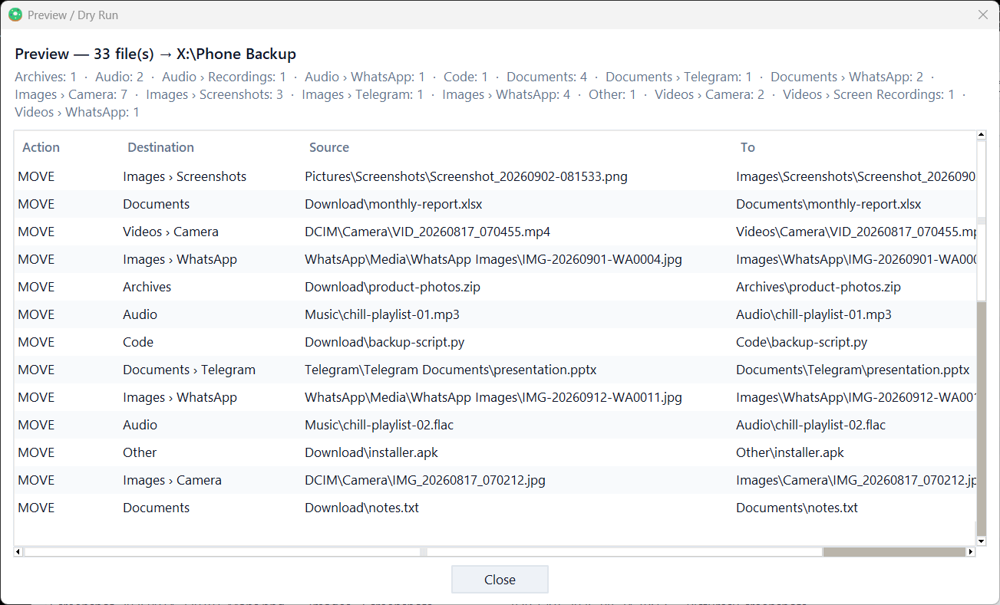
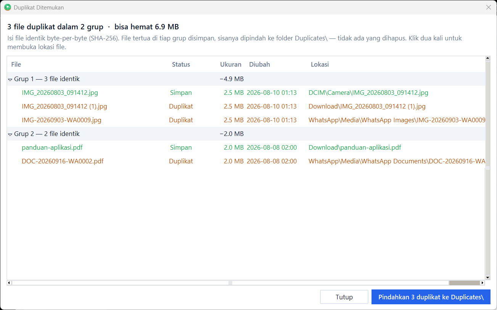

Start
Pick a phone or a folder
Connect the phone in File transfer mode and choose its storage, or pick a PC folder. Keep the phone's screen on while it is read.
Sorts the photos, videos, audio and documents from an Android phone into neat folders on your PC — straight over a USB cable or from a folder you already copied.
Version 1.1.0 · Windows 10 / 11 · Free & open source (MIT)

Built to be trusted with years of photos: it shows you everything first and never deletes or overwrites by surprise.
Read an Android phone over USB (MTP) the way Explorer does, or a folder you already copied.
Photos, Videos, Audio, Documents, Archives, Code and Other — 145 file types, RAW and HEIC included.
Camera, Screenshots, Screen Recordings, WhatsApp, Telegram, Instagram and call recordings get their own subfolders.
See where every file will go before anything moves. Move to clean up, or copy to keep the source untouched.
Size, first 64 KB, then full SHA-256 — only truly identical files match. Extras are moved aside, never deleted.
WhatsApp backups, databases and .nomedia markers are never moved, so chats can still be restored.
A clear table of every file, its category and its destination — with filters, search and one big Organize button.
Connect the phone in File transfer mode and choose its storage, or pick a PC folder. Keep the phone's screen on while it is read.


Category chips, name search, extensions, size and date ranges, sort by any column — and right-click to exclude files or folders.
The dry run lists every file with its destination folder. Nothing on your phone or PC changes until you press Organize.


Identical files are matched by content. The oldest copy stays; the others move to a Duplicates folder for you to review.
Windows 10 / 11 with Python 3. One file, no packages to install. English by default, Bahasa Indonesia in Options.
Get Python 3 for Windows (tested on 3.12). Tkinter is included — nothing else to install.
Download android_media_separator.py and double-click it, or run pythonw android_media_separator.py.
Pick the phone or folder, press Preview, choose Move or Copy and press Organize all.
No. Moving from a phone deletes each file there only after it has arrived on the PC, duplicates are moved to a folder (never deleted), and names never overwrite unless you choose to.
Yes — WhatsApp backups, databases, encrypted .crypt files and .nomedia markers are never moved, so chats can still be restored.
A phone that drops off USB is retried, then reported. Files already done stay done, and every action is logged to a CSV as it happens.
Windows 10 / 11 for now. The sorting engine passes its self-test on Ubuntu, but phone access (MTP) uses Windows-only APIs.